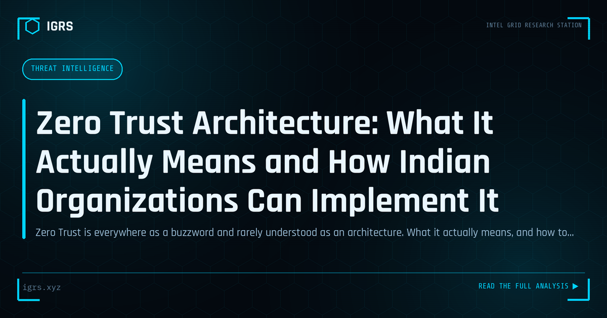

Zero Trust Architecture: What It Actually Means and How Indian Organizations Can Implement It
| File No. | IGRS-063/2026 |
| Subject | Practical Zero Trust implementation guide for Indian enterprise security teams |
| Category | Threat Intelligence |
| Author | Manuj Kumar Pandey |
| Published | 2026-06-11 |
| Reading time | 12 minutes |
Zero Trust is everywhere as a buzzword and rarely understood as an architecture. What it actually means, and how to move toward it practically with tools most Indian organizations already have.
Zero Trust: Never Trust, Always Verify
The traditional security model — a trusted internal network protected by a perimeter — has collapsed under cloud adoption, remote work, and sophisticated attacks. Zero Trust replaces it with a simple but powerful principle: never trust, always verify. Every access request is authenticated and authorised regardless of where it originates. For Indian organisations facing rising threats and DPDP compliance demands, Zero Trust is increasingly essential. This guide explains Zero Trust and its implementation.
What Zero Trust Means
Zero Trust assumes that no user, device, or network is inherently trustworthy. Rather than trusting anything inside the network perimeter, it requires continuous verification for every access request based on identity, device health, and context. The perimeter-based assumption that internal equals safe is abandoned — because attackers who breach the perimeter, or malicious insiders, exploit exactly that misplaced trust.
The Core Principles
| Principle | Application |
|---|---|
| Verify explicitly | Authenticate every request fully |
| Least privilege | Grant minimum necessary access |
| Assume breach | Design as if attackers are already inside |
Why Traditional Security Failed
The traditional castle-and-moat model trusted everything inside the network. But this model fails against modern realities: cloud services sit outside the perimeter, remote workers connect from anywhere, attackers who breach the perimeter move freely, and insiders abuse their trusted position. Zero Trust addresses all of these by removing the assumption of internal trust and verifying every access continuously.
Components of Zero Trust
Implementing Zero Trust involves several elements:
- Strong identity verification — MFA for all users
- Device posture checks — verifying device security before access
- Micro-segmentation — dividing networks to limit lateral movement
- Least-privilege access — minimal permissions, just-in-time where possible
- Continuous monitoring — ongoing verification and anomaly detection
- Encryption — protecting data in transit and at rest
Identity as the New Perimeter
In Zero Trust, identity becomes the primary security boundary. Strong authentication — particularly MFA — is foundational, since verifying who is requesting access is the first step in every decision. Identity and access management systems, conditional access policies, and continuous authentication ensure that access is granted based on verified identity and context rather than network location.
Micro-Segmentation
Micro-segmentation divides the network into small zones, each requiring separate authentication. This contains breaches — an attacker who compromises one segment cannot freely move to others. Unlike the flat internal networks of traditional models, where one foothold enables lateral movement across the whole environment, micro-segmentation limits the blast radius of any compromise, a key Zero Trust defence.
Implementing Zero Trust in India
For Indian organisations, Zero Trust implementation is a phased journey rather than a single project. It typically begins with strengthening identity through MFA, then progresses to device verification, network segmentation, and least-privilege access. The approach should be risk-based, prioritising the most critical assets and data. Given DPDP Act data protection obligations, Zero Trust's strong access controls and monitoring also support compliance.
Zero Trust and DPDP Compliance
Zero Trust principles align well with the DPDP Act 2026's data protection requirements. Least-privilege access ensures only authorised individuals access personal data, continuous monitoring detects unauthorised access, and strong authentication prevents account compromise. Organisations implementing Zero Trust find it strengthens both security and their ability to demonstrate the data protection controls the DPDP Act requires, with its penalties reaching ₹250 crore.
Common Implementation Challenges
Zero Trust adoption faces challenges: legacy systems not designed for it, user experience friction from additional verification, the complexity of micro-segmentation, and the organisational change required. Successful implementation balances security with usability, phases the rollout to manage complexity, and secures leadership support for the cultural shift. Treating Zero Trust as a journey rather than a destination helps organisations make steady progress.
Zero Trust for Remote Work
Remote and hybrid work make Zero Trust especially valuable. With employees connecting from various locations and devices, the traditional perimeter is meaningless. Zero Trust verifies each remote access request based on identity, device health, and context, providing secure access without the vulnerabilities of traditional VPN-based perimeter models. This makes Zero Trust well-suited to the modern, distributed workforce.
The Path Forward
For Indian organisations, Zero Trust represents the modern approach to security in a world without trusted perimeters. Beginning with strong identity and MFA, progressing through device verification, segmentation, and least privilege, and maintaining continuous monitoring, organisations can build security that matches today's threats. Combined with DPDP compliance benefits, Zero Trust is becoming not just a security best practice but a business necessity for organisations serious about protecting their systems and the personal data they hold.